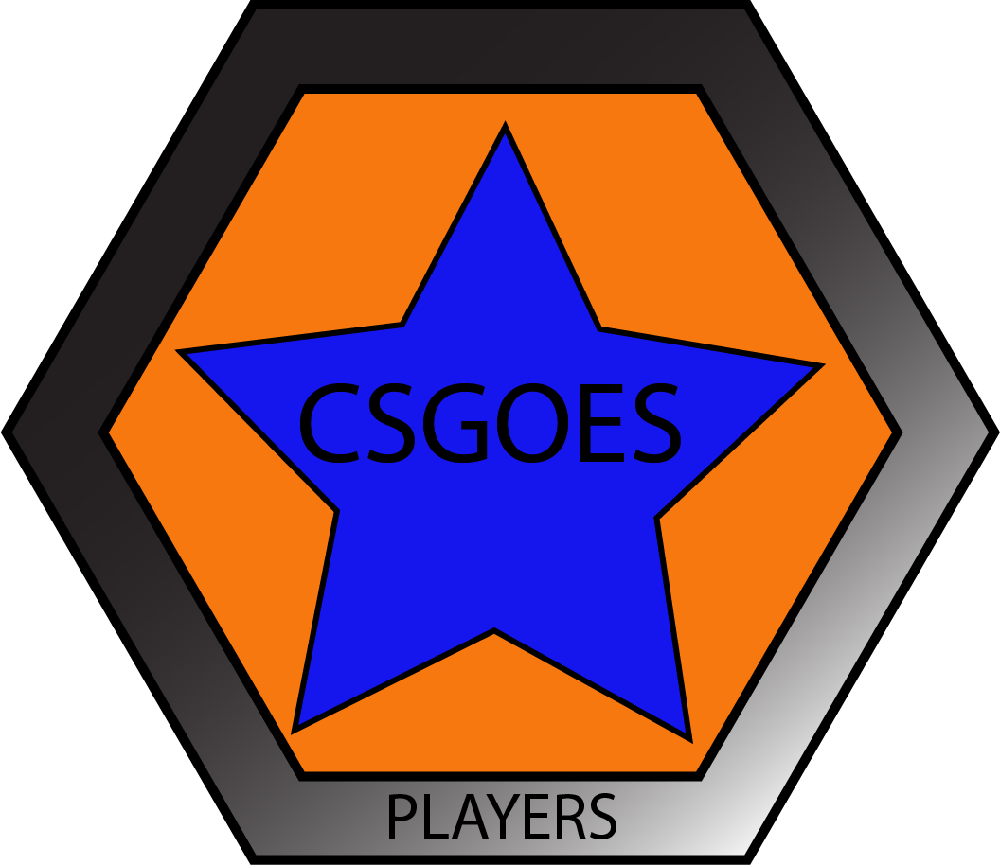
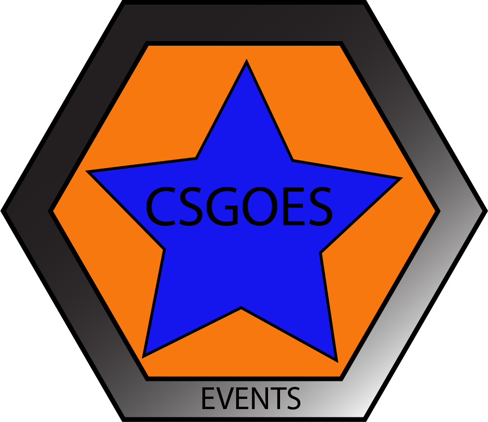
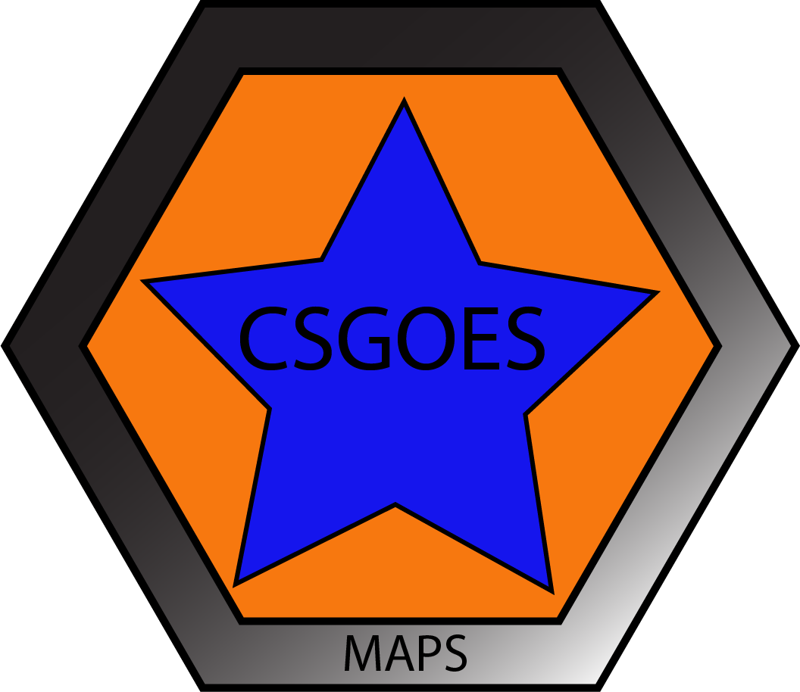
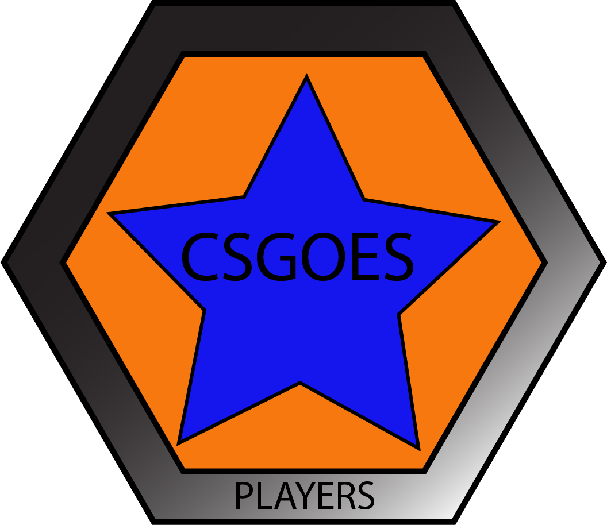
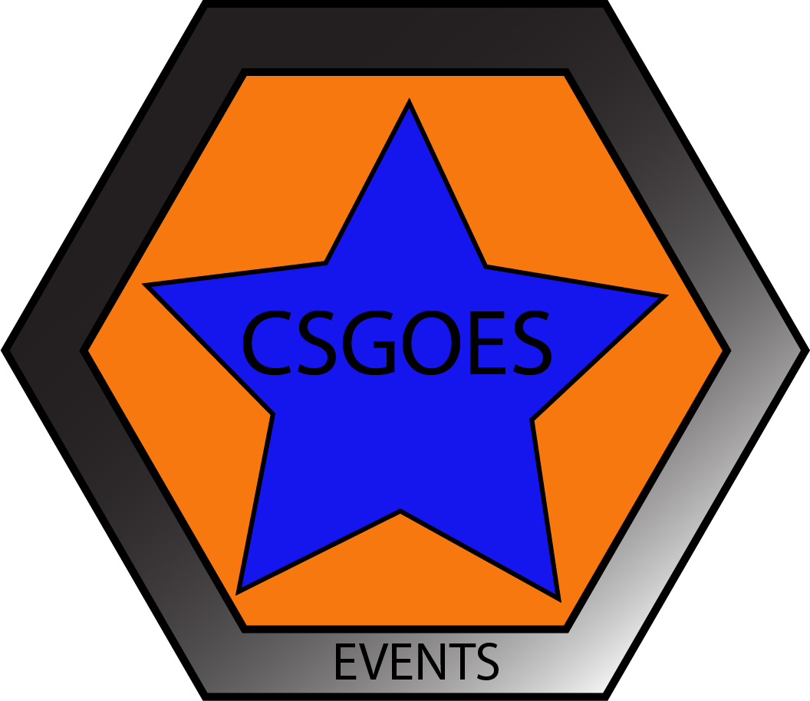
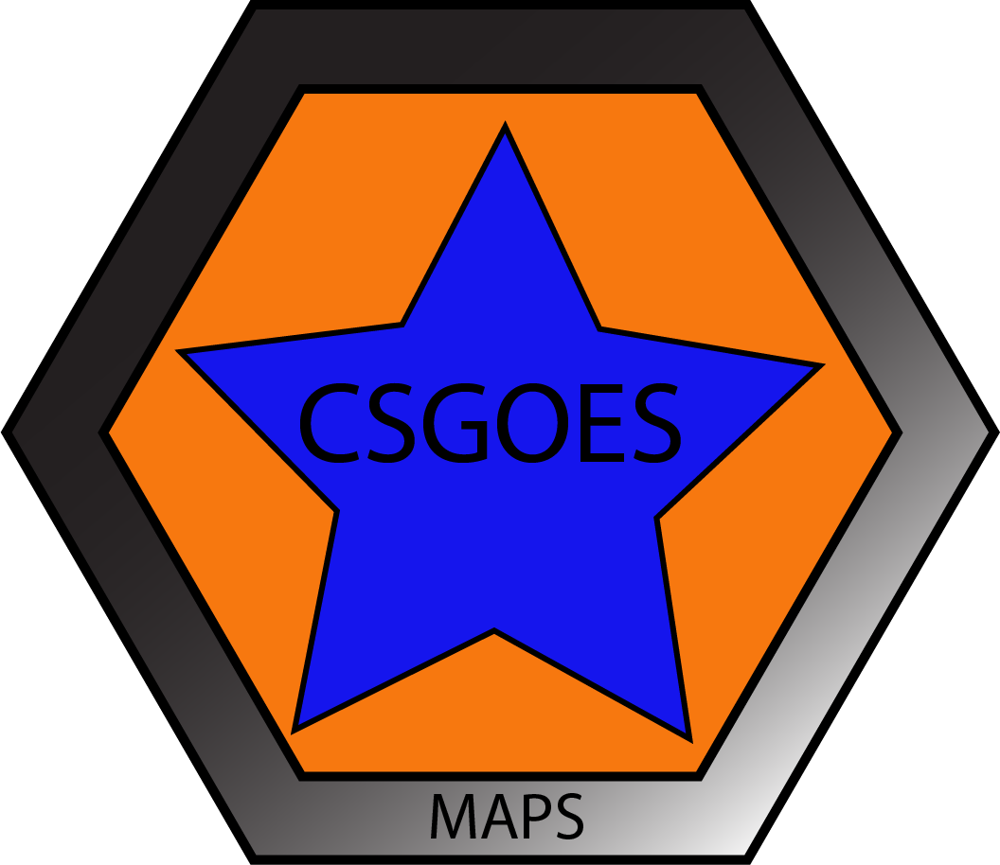

Main Menu
Teams
Players
Services
Events
Stats
Maps
More
Main Menu
Teams
Players
Services
Events
Stats
Maps
More
This is my opinion on who the top 5 players are in the world with performance and stats both on-line and on LAN.
#1. I believe that s1mple is currently the best player in the world due to his ability to keep his team preforming well and is consistently getting the highest stats out of all of them. The Ukrainian superstar is only 20 years old and still has many years to improve and become unstoppable.
#2. For the second position I am going to choose NiKo. I believe he is a close contender for the #1 spot but over the past few months he hasn't been preforming like himself. NiKo was awarded the #2 player in the world 2017 and at the end of this year i believe he will be either #2 or #1. The 21 year old Bosnian has been a player which no-one wants to come up against with his speed and accuracy.
#3. The Danish superstar has been a key part to Astralis as he continues to clutch rounds against the toughest of opponents. The 22 year old was awarded the 20th best player in 2013 and the 13th best in 2017 and this year i believe that he will make the top 5.
#4. GuardiaN has been a key part of FaZe. He is easily one of the best snipers in the game. Ladislav Kovács is a 26 year old from Slovakia and has been a professional gamer before CS:GO was released. He was awarded #10 in 2013, #11 in 2014, #2 in 2015, #17 in 2016 and #9 in 2017.
#5. Flusha has been in the Counter Strike scene for a long time and has won 3 majors which in one he was awarded the MVP. He was #13 in 2013, #2 in 2014, #5 in 2015, #10 in 2016. He is only 24 and got a long carrer ahead of him.